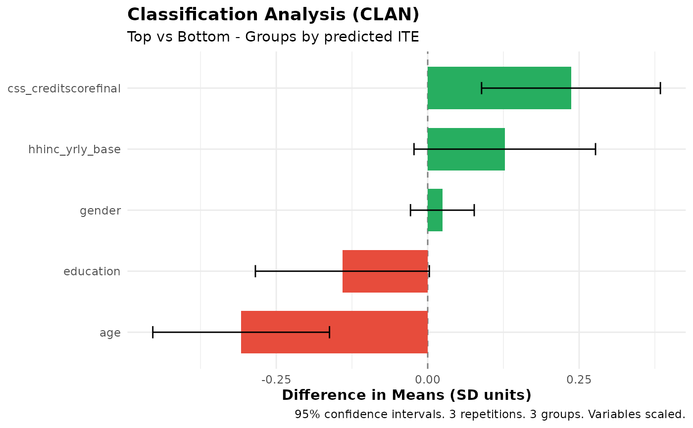

Computes Classification Analysis (CLAN), an analysis introduced by Chernozhukov et al. (2025) to characterize which units have the highest and lowest predicted treatment effects or predicted outcomes.
This function implements the multiple-split estimation strategy developed by Fava (2025), which combines predictions from multiple machine learning algorithms into an ensemble and averages CLAN estimates across M repetitions of K-fold cross-fitting to improve statistical power.
Usage
clan(
ensemble_fit,
variables = NULL,
n_groups = 3,
na_rm = FALSE,
scale = FALSE,
subset = NULL,
group_on = c("auto", "all", "analysis")
)Arguments
- ensemble_fit
An object of class `ensemble_hte_fit` from `ensemble_hte()` or `ensemble_pred_fit` from `ensemble_pred()`.
- variables
Either:
NULL(default): Uses all covariates from the ensemble fit (i.e.,names(ensemble_fit$X))Character vector of variable names present in the `data` used in the ensemble function
A data.frame/data.table with covariates to analyze (must have same number of rows as data)
- n_groups
Number of groups to divide the sample into (default: 3). CLAN compares the top group (highest predicted ITE or Y) to others.
- na_rm
Logical, whether to remove NA values when computing means and variances (default: FALSE). If FALSE and NAs are present, results will be NA.
- scale
Logical, whether to scale non-binary variables to have mean 0 and standard deviation 1 before computing differences (default: FALSE). This makes coefficients comparable across variables with different scales.
- subset
Which observations to use for the CLAN analysis. Options:
NULL (default): uses all observations (or training obs for
ensemble_pred_fitwhen using the default outcome with subset training)"train": uses only training observations (forensemble_pred_fitonly)"all": explicitly uses all observationsLogical vector: TRUE/FALSE for each observation (must have same length as data)
Integer vector: indices of observations to include (1-indexed)
This allows evaluating CLAN on a subset of observations.
- group_on
Character controlling which observations define the quantile cutoffs used to form groups. One of:
"auto"(default): Uses the ML training population. Forensemble_hte_fitthis is all observations. Forensemble_pred_fitwithtrain_idx, it is the training subset. This ensures an observation's group assignment does not change when you vary the analysis subset."all": Always form groups using all observations."analysis": Form groups within whatever observations are being analyzed (i.e. thesubset).
Has no effect when
subset = NULLand all observations are used.
Value
An object of class `clan_results` containing:
estimates: data.table with CLAN estimates averaged across repetitions, including group means (
mean_top,mean_bottom,mean_else,mean_all), their standard errors (se_top,se_bottom,se_else,se_all), differences (diff_top_bottom,diff_top_else,diff_top_all), difference standard errors (se_diff_top_bottom,se_diff_top_else,se_diff_top_all), t-values (t_diff_top_bottom, etc.), and p-values (p_diff_top_bottom, etc.)variables: variables analyzed
n_groups: number of groups used
targeted_outcome: the outcome used for prediction
fit_type: "hte" or "pred" depending on input
M: number of repetitions
scaled: whether variables were scaled
variable_sds: named numeric vector of per-variable standard deviations (NA for binary variables). Used by the
plotmethod for on-the-fly rescaling.group_on: how groups are formed (\"auto\", \"all\", or \"analysis\")
call: the function call
Estimation Procedure
For each repetition \(m = 1, \ldots, M\):
Observations are assigned to
n_groupsquantile-based groups by ranking the ensemble predictions from repetition \(m\) within each fold. Group 1 contains the lowest predicted values and groupn_groupsthe highest. Forming groups within folds ensures independence between group assignment and out-of-sample predictions.For each covariate, the mean is computed within the top group, the bottom group, the "else" group (all groups except the top), and all observations. Standard errors are computed analytically from group variances (or via regression with cluster-robust SEs when
individual_idwas specified).Three differences are computed: top minus bottom, top minus else, and top minus all.
The final reported estimates and standard errors are the simple averages of the per-repetition estimates and standard errors across all \(M\) repetitions.
References
Chernozhukov, V., Demirer, M., Duflo, E., & Fernández-Val, I. (2025). Fisher–Schultz Lecture: Generic Machine Learning Inference on Heterogeneous Treatment Effects in Randomized Experiments, with an Application to Immunization in India. Econometrica, 93(4), 1121-1164.
Fava, B. (2025). Training and Testing with Multiple Splits: A Central Limit Theorem for Split-Sample Estimators. arXiv preprint arXiv:2511.04957.
Examples
# \donttest{
data(microcredit)
covars <- c("age", "gender", "education", "hhinc_yrly_base",
"css_creditscorefinal")
dat <- microcredit[, c("hhinc_yrly_end", "treat", covars)]
fit <- ensemble_hte(
hhinc_yrly_end ~ ., treatment = treat, data = dat,
prop_score = microcredit$prop_score,
algorithms = c("lm", "grf"), M = 3, K = 3
)
#> Warning: Some propensity scores are below 0.20 or above 0.80. This package is designed for randomized controlled trials (RCTs), where propensity scores are typically well-balanced. Extreme propensity scores may indicate an observational study or a heavily unbalanced design. Please verify your experimental design.
result <- clan(fit)
print(result)
#> CLAN Results (Classification Analysis)
#> =======================================
#>
#> Outcome: hhinc_yrly_end (treatment effects) | Groups: 3 | Reps: 3
#>
#> Group Means (by predicted ITE):
#> Top Bottom Else All
#> ----------------------------------------------------------------
#> age 40.53 43.23 42.83 42.06
#> (0.45) (0.48) (0.32) (0.26)
#> gender 0.85 0.83 0.85 0.85
#> (0.02) (0.02) (0.01) (0.01)
#> education 1.40 1.47 1.45 1.43
#> (0.03) (0.03) (0.02) (0.02)
#> hhinc_yrly_base 20673.88 18362.35 16685.36 18018.45
#> (1017.12) (919.40) (628.69) (544.67)
#> css_creditscorefinal 51.89 50.62 51.03 51.32
#> (0.28) (0.29) (0.20) (0.16)
#>
#> Differences from Top Group:
#> Top-Bot Top-Else Top-All
#> --------------------------------------------------------
#> age -2.70*** -2.30*** -1.53***
#> (0.65) (0.55) (0.37)
#> gender 0.02 -0.00 -0.00
#> (0.03) (0.02) (0.02)
#> education -0.08. -0.05 -0.04
#> (0.04) (0.03) (0.02)
#> hhinc_yrly_base 2311.52. 3988.51*** 2655.42***
#> (1389.10) (1200.50) (801.20)
#> css_creditscorefinal 1.27** 0.86* 0.57*
#> (0.40) (0.34) (0.23)
#>
#> ---
#> Signif. codes: 0 '***' 0.001 '**' 0.01 '*' 0.05 '.' 0.1 ' ' 1
plot(result)

# }